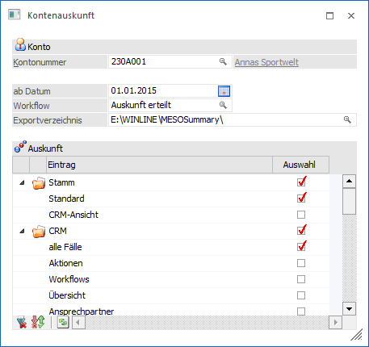
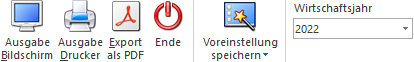

Im WinLine INFO über den Menüpunkt…
1 Info
1 Auskunftserteilung
1 Kontenauskunft
… können für ein Konto (ausgenommen Sachkonten) alle Auswertungen, welche bereits in der Kontoinformation zur Verfügung stehen, in einer einzelnen zusammengefassten Ausgabe dargestellt werden.
Hinweis
Die Baumstruktur kann individuell im Menüpunkt "Einstellungen - Ansicht" angepasst werden. Die dort selektierten Einträge werden auch in den Auskunftsmenüpunkten herangezogen.

Ø Kontonummer
Eingabe der Kontonummer (ausgenommen Sachkonten). Über die Matchcode-Funktion kann nach allen bereits angelegten Konten gesucht werden.
Ø ab Datum
Eingabe des Datums für die Ausgabe der Daten. Hierbei wird abhängig vom Landeskennzeichen des Mandanten (siehe "FIBU-Parameter") ein Datum vorgeschlagen.
ü Mandant mit Landeskennzeichen
"Deutschland"
Wirtschaftsjahresbeginn abzüglich 10 Jahre
ü Mandant mit Landeskennzeichen
ungleich "Deutschland"
Wirtschaftsjahresbeginn abzüglich 7 Jahre
Hinweis
Diese Einschränkung gilt für die Ausgabe der Bewegungsdaten und der CRM-Fälle.
Ø Workflow
In diesem Feld kann die Nummer jenes Workflows oder Aktionsschrittes angegeben werden, der bei der Auswahl des Buttons "Export als PDF" angestoßen wird. Um nach Workflows oder Aktionsschritten zu suchen, steht der Matchcode zur Verfügung. Standardmäßig wird der Workflow "Auskunft erteilen" herangezogen.
Ø Exportverzeichnis
Erfolgt die Ausgabe auf PDF, dann wird die Auswertung in ein eigenes Verzeichnis abgelegt. Standardmäßig wird das lokale Programmverzeichnis mit dem Unterordner MESOSummary vorgeschlagen. Dieses Verzeichnis kann über den Matchcode-Button ausgewählt werden. Der angegebene Pfad wird nach einmaliger Ausgabe für alle Benutzer gespeichert.
Bereiche
Die Informationen sind in folgende Teilbereiche gegliedert, welche über eine Baumstruktur angewählt werden können:
ü Stamm
ü CRM
ü Salden
ü Detailsalden
ü Buchungen
ü Journalsummen
ü Offene Posten
ü Mehrjahresvergleich
ü Belege
ü Statistik
ü Preise
ü Projekte
Ø Stammdaten
In diesem Bereich werden die Stammdaten des jeweiligen Kontos angezeigt.
Ø Auswertung
Der Bereich "Stamm" ist in 2 verschiedenen Ansichten unterteilt:
ü Standard
ü CRM-Ansicht
Ø Standard
In der Standard-Ausgabe werden alle Stamm- und Bewegungsdaten des Kontos ausgegeben. Diese Auswertung enthält alle Basisinformationen und Informationen zu den Zusatzfeldern des Kontos.
Ø CRM-Ansicht
In der CRM-Ansicht werden die Basisinformationen inkl. CRM-Fälle als "Web-CRM"-Ansicht ausgegeben.
Ø CRM
Der Bereich "CRM" ist in 6 Ansichten unterteilt:
ü alle Fälle
ü Aktionen
ü Workflows
ü Übersicht
ü Ansprechpartner
ü Kampagnen
Hinweis
Es kann jeder Benutzer der CRM und DSVGO berechtigt ist alle Workflows und Aktionen sehen.
Ø Alle Fälle
In der Ansicht "alle Fälle" werden CRM Fälle der Typen "CRM Aktion" und "CRM Workflow" angezeigt, welche für das gewählte Konto erfasst wurden.
Ø Aktionen
In der Ansicht Aktionen" werden CRM Fälle des Typs "CRM Aktion" angezeigt, welche für das gewählte Konto erfasst wurden.
Ø Workflows
In der Ansicht "Workflows" werden die CRM-Fälle des Typs "CRM-Workflows" angezeigt, welche für das angegebene Konto erfasst wurden.
Ø Übersicht
Hier wird eine Übersicht aller CRM-Fälle inkl. einer "Top10 - Aktionen"-Grafik und einer "Top10-Workflow"-Grafik ausgegeben.
Ø Ansprechpartner
Bei der Anwahl der Checkbox "Ansprechpartner" wird eine Übersicht der Ansprechpartner inkl. Fallübersicht der Ansprechpartner ausgegeben.
Ø Kampagnen
Hier werden alle Kampagnen angezeigt, welche dem ausgewählten Konto zugewiesen wurden.
Ø FIBU-Salden (nur akt. Wirtschaftsjahr)
In diesem Bereich werden die Salden vom gewählten Wirtschaftsjahr des Kontos angezeigt.
Ø Detailsalden (nur akt. Wirtschaftsjahr)
In der Ansicht "Detailsalden" werden die Salden des Kontos detailliert inkl. Soll und Haben Differenzen der Sachkonten und entsprechender Grafik angezeigt. (Selektion lt. Wirtschaftsjahr)
Ø Buchungen (nur akt. Wirtschaftsjahr)
In diesem Bereich werden alle FIBU-Buchungen von dem betroffenen Konto angezeigt.
Ø Journalsummen (nur akt. Wirtschaftsjahr)
In diesem Bereich werden die Summen pro Buchungsart ausgewiesen, die auf dem ausgewählten Konto gebucht wurden. (Selektion lt. Wirtschaftsjahr)
Ø Offene Posten
Der Bereich "Offene Posten" ist in 3 verschiedenen Ansichten unterteilt:
ü ohne Grafik
ü inkl. Aktionen
ü Sachkonten-OP
Ø ohne Grafik
In dieser Ansicht werden alle offenen Posten des ausgewählten Kontos ohne Grafik dargestellt.
Ø inkl. Aktionen
Hier werden zu den offenen Posten erfasste CRM- Aktionen zusätzlich angezeigt.
Ø Sachkonten-OP
Beim Punkt "Sachkonten-OP" werden die offenen Posten von Sachkonten des gewählten Kontos angezeigt.
Ø Mehrjahresvergleich (max. 5 Jahre)
Beim "Mehrjahresvergleich" erhält man eine Gegenüberstellung des gewählten Wirtschaftsjahres im Vergleich zu den Vorjahren. (maximal 5 Jahre)
Ø Belege
Der Bereich "Belege" ist in 3 verschiedenen Ansichten unterteilt:
ü Summe
ü Belegansicht
ü Einzelzeilen
Ø Summe
Hier wird je nach Belegstufe eine Summenzeile und die Anzahl der Belege inkl. Rohertrag und Rabatt übersichtlich dargestellt.
Ø Belegansicht
Im Bereich "Belegansicht" werden für jede Belegstufe die einzelnen Belege in Summe aufgelistet und zusätzlich die Belegnummer, der Rohertrag und der Rabatt angezeigt.
Ø Einzelzeilen
Bei der Ausgabe "Einzelzeilen" werden zusätzlich zu den einzelnen Belegen alle dazugehörigen Artikel-Einzelzeilen angezeigt.
Ø Statistik
Der Bereich "Statistik" ist in 4 verschiedenen Ansichten unterteilt:
ü YTD
ü Einzelzeilen
ü Komprimiert
ü kompr. inkl. Menge
Ø YTD (nur akt. Wirtschaftsjahr)
In diesem Bereich werden die Summen pro Buchungsart ausgewiesen, die auf dem ausgewählten Konto gebucht wurden. (Selektion lt. Wirtschaftsjahr)
In dieser Ausgabe werden die Informationen "Menge", "Umsatz" und "Rochertrag" des Kontos inkl. Grafik ausgegeben. Hier werden die Werte des selektierten Wirtschaftsjahres mit denen des Vorjahres verglichen werden.
Ø Einzelzeilen
In der Ansicht "Einzelzeilen" werden die einzelnen Statistikzeilen des gewählten Kontos ausgegeben.
Ø Komprimiert
Hier werden die Statistikzeilen (Beträge) für das aktuelle Jahr, sowie für max. 4 Vorjahre, nach Monaten kumuliert, angezeigt.
Ø Kompr. inkl. Menge
Zusätzlich zur komprimierten Anzeige werden die Mengen in komprimierten Form mitangedruckt.
Ø Preise
In der Ansicht "Preise" werden die kundenspezifischen und speziellen Preise des gewählten Kontos angezeigt.
Ø Projekte
Der Bereich "Projekte" ist in 2 verschiedenen Ansichten unterteilt:
ü Projektauswertung
ü Aktivitätencontrolling
Ø Projektauswertung
In diesem Bereich werden alle Projekte des gewählten Kontos aufgelistet.
Ø Aktivitätencontrolling
In der Ansicht "Aktivitätencontrolling" können die Pre- bzw. Postsales Stati ausgewertet werden
Tabellenbuttons

Ø alle Bereiche selektieren
In der Tabelle werden bei allen Zeilen die Checkbox der Spalte "Auswahl" aktiviert.
Ø Selektion umkehren
Durch Anwahl des Umkehren-Buttons werden alle Selektionen umgekehrt. Es werden somit alle selektierten Bereiche umselektiert, nicht selektierte Bereiche werden selektiert.
Ø Standardselektion
Durch Drücken des Buttons "Standardselektion" werden die Standardauswertungen bzw. Standardbereiche wieder aktiviert.
Ø Ausgabe Excel
Durch Anwahl des Buttons "Ausgabe Excel" wird der Inhalt der Tabelle an Microsoft Excel übergeben.
Ø Tabelleneinstellungen speichern
Die Spalten in der Tabelle können in der Breite entsprechend angepasst werden. Durch Anwahl des Buttons "Tabelleneinstellungen speichern" werden die Einstellungen benutzerspezifisch gespeichert und bei dem nächsten Aufruf des Menüpunktes wieder vorgeschlagen.
Ø Gesamteinstellungen speichern
Im Gegensatz zu "Tabelleneinstellungen speichern" können mit "Gesamteinstellungen speichern" mehrere Tabellenaufbauten gespeichert und nach Wunsch geladen werden.
Buttons

Ø Ausgabe Bildschirm
Mit Hilfe des Buttons "Ausgabe Bildschirm" oder der F5-Taste wird die Auswertung am Bildschirm ausgegeben.
Ø Ausgabe Drucker
Durch Anwahl des Buttons "Ausgabe Drucker" wird die Auswertung am Drucker ausgegeben.
Ø Export als PDF
Durch Drücken des Buttons "Export als PDF" werden die jeweils ausgewählten Bereiche als eine zusammengefasst PDF-Datei in das eingetragene Verzeichnis exportiert.
Dabei wird auch der ausgewählte Workflowschritt angestoßen und die PDF-Datei wird als Upload in den Workflowschritt abgestellt. Der Name der PDF-Datei setzt sich wie folgt zusammen:
ü ACC+Kontonummer+Mandantennummer+Benutzernummer.PDF
Bei einer nochmaligen Ausgabe wird die bereits vorhandene PDF-Datei der Kontenauskunft ohne eine Meldung überschrieben.
Ø Ende
Durch Drücken des Buttons "Ende" bzw. der ESC-Taste wird der Menüpunkt geschlossen.
Ø Voreinstellung speichern
Durch Anwahl dieses Buttons erfolgt eine benutzerspezifische Speicherung aller im Fenster getätigten Einstellungen. Diese sogenannten "Voreinstellungen" können jederzeit wieder abgerufen werden und ermöglichen dadurch ein schnelleres und zielorientierteres Arbeiten (nähere Informationen entnehmen Sie bitte dem Kapitel "Die Voreinstellungen").
Ø Wirtschaftsjahr
Hier wird das Wirtschaftsjahr ausgewählt welches für die Ausgabe von Bewegungsdaten herangezogen wird.